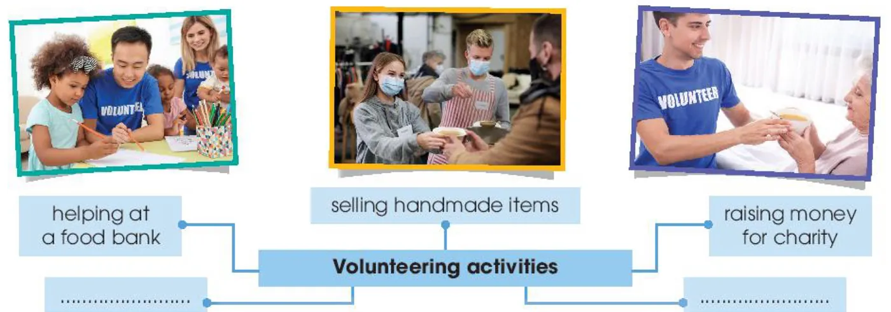
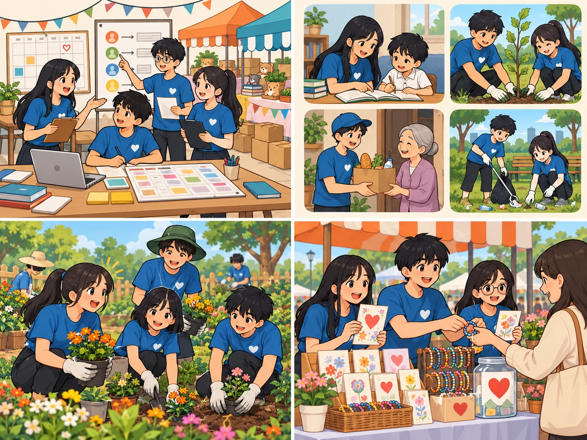
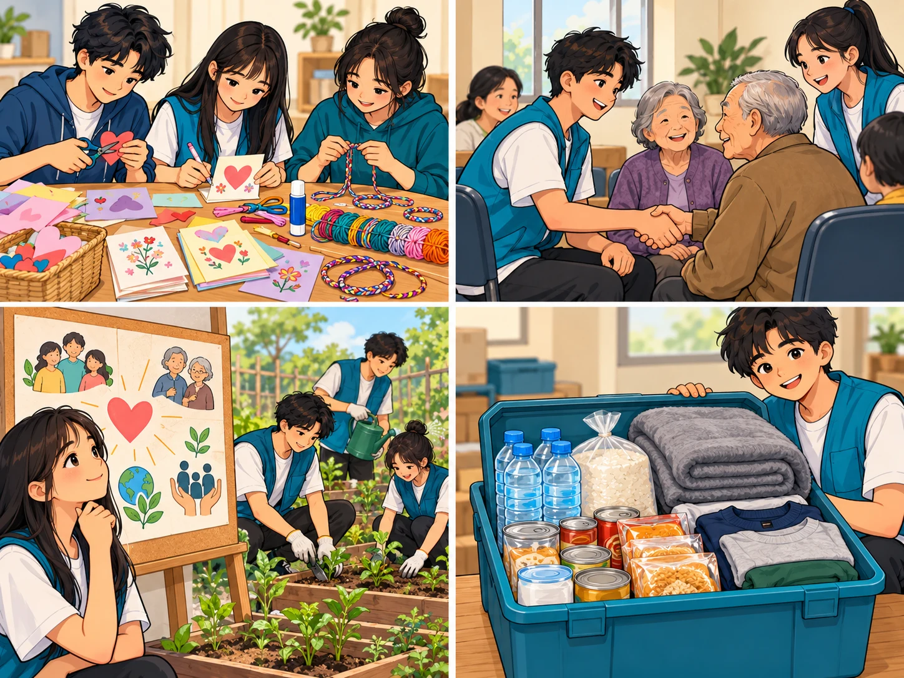

Teenagers and voluntary work
Lesson 3 — Reading
4Five stops in 45 minutes
- 🔢
Warm-up
Lucky number
5 min - 🗺️
Before
Mind map + 5 words
8 min - 📖
While
Tasks 2, 3, 4
18 min - 🧭
Game
Reading Quest
6 min - 💬
After
What could you do?
8 min
By the end of this lesson…
- 🎯
Main idea
Choose the main idea of a text about a volunteer club.
- 🔎
Guess meaning
Match highlighted words with their meanings.
- ✅
Details
Decide if statements are true or false.
Lucky number
Warm-up · two teams
5 minutesAnswer for points — one number is lucky!
1. When do we use the past continuous? for an action in progress in the past (the longer action)
2. When do we use the past simple? for a finished past action / the shorter action that interrupts
3. While I (listen) ______ to music, my sister (knock) ______ on the door. was listening · knocked
4. Name two volunteering activities. e.g. cleaning up the park, volunteering at an orphanage
Before you read
Task 1 · mind map
8 minutesComplete the mind map: volunteering activities for teenagers

Add two more activities. helping old people with technology · helping out at an animal shelter · helping at a charity event

organise
(v) /ˈɔːɡənaɪz/ tổ chức, sắp xếp The students organise a charity fair.various
(adj) /ˈveəriəs/ nhiều loại khác nhau, đa dạng Our club organises various volunteer activities.participate
(v) /pɑːˈtɪsɪpeɪt/ tham gia Many students participate in the park clean-up.sell
(v) /sel/ bán We sell handmade cards to raise money.
handmade
(adj) /ˌhændˈmeɪd/ làm bằng tay, thủ công We sell handmade bracelets at the charity fair.While you read
The Volunteer Club · page 45
18 minutesThe Volunteer Club · paragraphs 1–2
I joined the Volunteer Club when I started secondary school. The club was formed fifteen years ago, shortly after the school was set up. Since then, it has organised various volunteering activities for all students to participate.
One of the most popular activities of our club is selling handmade items to raise money for the local orphanage and homeless old people. Last year, we also raised over one hundred million VND to help people in flooded areas. The money was used to buy warm clothes, blankets, food, and clean water.
The Volunteer Club · paragraph 3
Our club welcomes different types of donations: clothes, picture books, unused notebooks, and other unwanted items. At the end of each month, we take the donations to the community centre. Our club also organises afterschool games for the children at the orphanage and concerts for the old people at the centre. In addition, it offers other volunteering activities, such as helping at a food bank or delivering free meals to poor families.
The Volunteer Club · paragraph 4
Volunteering has helped me gain life experiences and find my sense of purpose in life. When I see suffering and hardships, I feel thankful for what I have. What is more, these activities provide opportunities for me to meet other teenagers with similar interests and help me build essential life skills.
What is the text mainly about?
Main idea: C
A. The writer’s secondary school has a long and interesting history.
B. The Volunteer Club was set up 15 years ago to help teens gain work experience.
C. The club organises many volunteering activities that benefit both the community and the students.
Match the highlighted words with their meanings
1. various c
2. participate d
3. items a
4. raised e
5. delivering b
a. objects or things
b. taking things to someone
c. several different
d. to take part in an activity
e. collected money
Read again · 1–2
- The Volunteer Club was set up long after the school was opened. FALSE shortly after
- All students can join different volunteering activities. TRUE
Read again · 3
- The money collected from selling handmade items is used to build a local centre for orphans and homeless old people. FALSE The money is used to help the local orphanage and homeless old people.
Read again · 4–5
- Club members can also help cook free meals for poor families. FALSE they deliver free meals
- Students can volunteer at the orphanage or the community centre. TRUE
Reading Quest
Game · check your reading
6 minutesAfter you read
Task 5 · discussion
8 minutesIf you were a member of the Volunteer Club, what could you do to help?
- 🧶
Make
handmade cards, bracelets to sell
- 📦
Collect
books, clothes, notebooks
- 🎲
Play
games with children at the orphanage
- 🍱
Deliver
free meals to poor families
If I were a member of the club, I could …
What have you learnt today?
Today’s board
Words: organise · various · participate · sell · handmade
Skills: read for the main idea · guess meaning from context · decide true or false
Homework: workbook Unit 4 Reading; prepare Lesson 4 — Speaking (page 46).